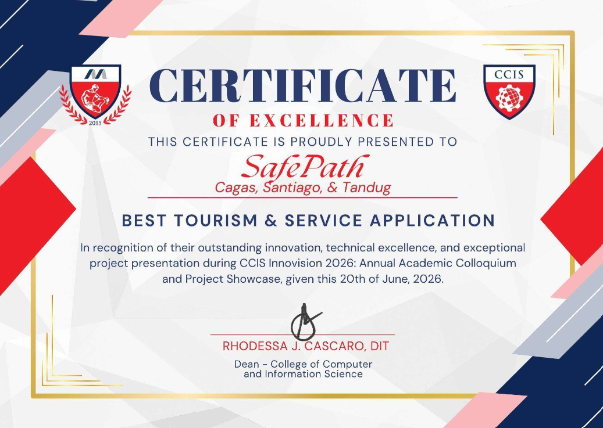
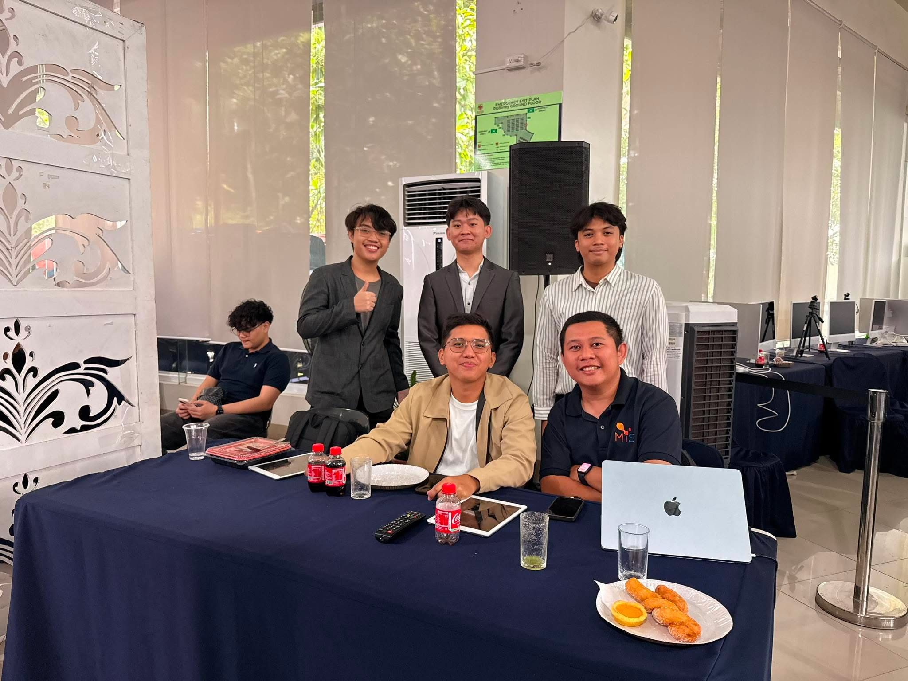
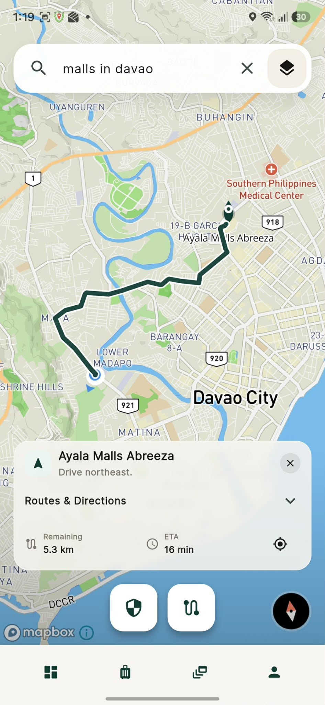
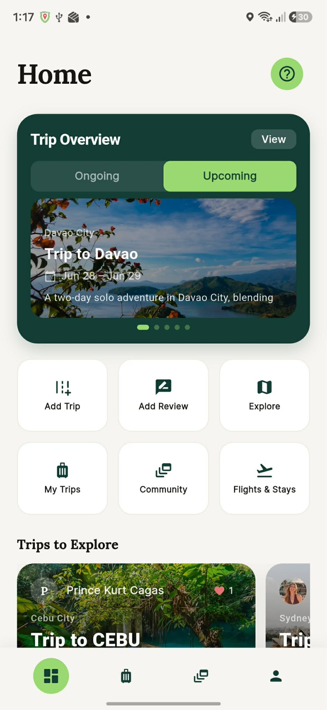
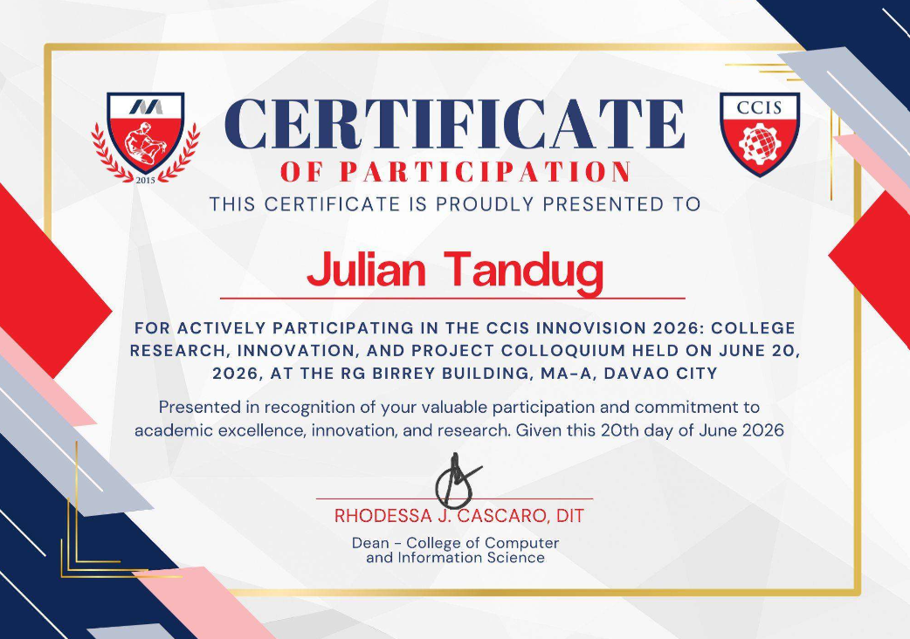
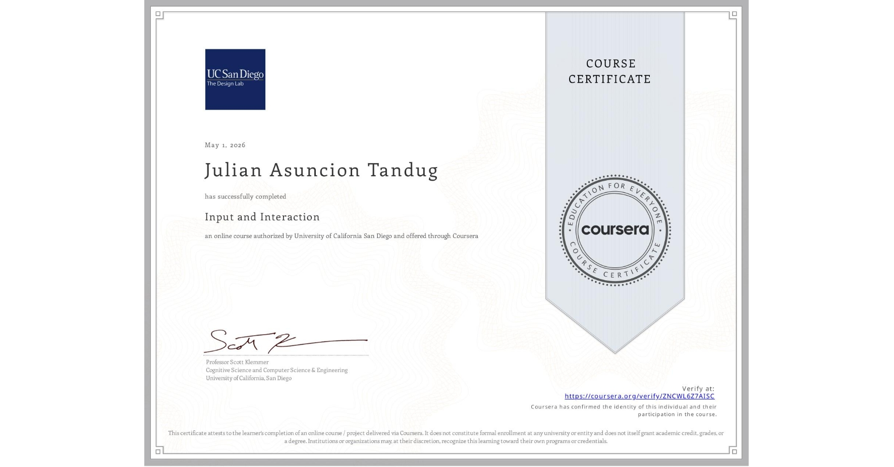
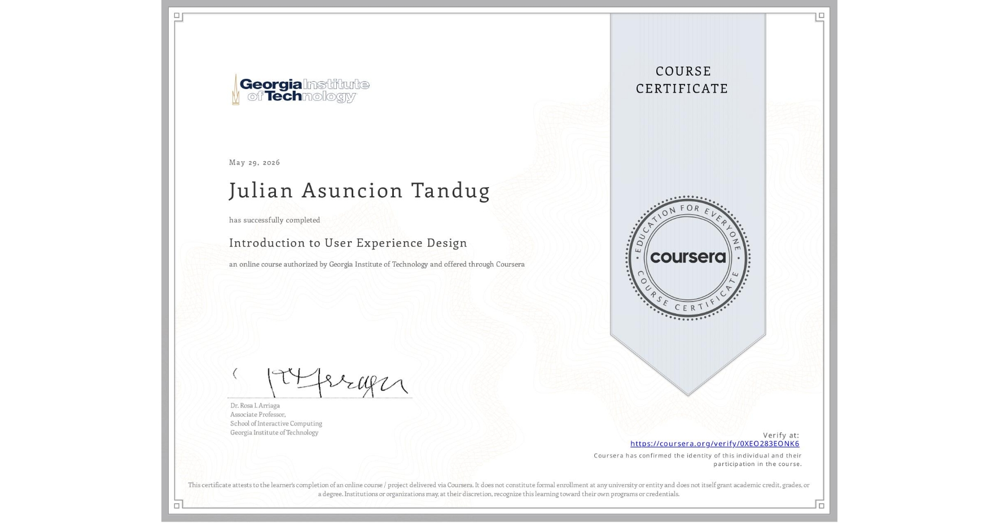

About Me
Hi! I'm Julian, a novice programmer currently studying HTML, CSS, and JavaScript. Welcome to my portfolio.
Achievements & Certifications
- Mapua Malayan Colleges Mindanao Senior Highscool Graduate (2024)
- ITS Java Specialization Certification
- Deans lister 2024-2025
Final Project: SafePath Ui
This is the final output for our Human-Computer Interaction course. It focuses on the UI elements of our application SafePath.
🏆 CCIS Innovision 2026 Award
Award Received: Best Tourism and Service Application
Reflection
Winning the Best Tourism and Service Application award at CCIS Innovision 2026 was an incredible experience. Through this project, I learned how to build a machine learning model using Roboflow to classify NSFW and violent Images to create the image filter. I also gained hands-on experience with Flutter for mobile app development, which was both challenging and rewarding. The event itself was fun and engaging, and presenting our work to judges and fellow students helped boost my confidence. This achievement motivated me to continue exploring the intersection of AI and mobile development.


📱 Final Interface Screenshots




📜 Certificates & Seminars

CCIS Innovision 2026
Certificate of Participation
CCIS Innovision 2026
Certificate of Award

Coursera Certificate
Input and Interaction

Coursera Certificate
Introduction to User Experience Design
Previous Projects
Calorie Tracker
A Java CRUD-based application designed for tracking and managing daily calorie intake.
Tech Stack: Java, CRUD Operations
EasyE
A C# WinForms Application to manage events and its participants.
Tech Stack: C#, MySQL, WinForms
GreenSense — Landing Page
Responsive landing page for GreenSense (HTML / CSS ).
Tech Stack: HTML, CSS, JavaScript
Machine Problem — Input Cleaner
A simple webpage that takes user input and outputs the same text with all spaces removed.
Tech Stack: HTML, CSS, JavaScript
Machine Problem — Email Validator
A lightweight email validation tool that checks if the user's input is a valid email format.
Tech Stack: HTML, CSS, JavaScript
Minecraft API Project
A web application that interacts with the Minecraft rest API to fetch items and their descriptions.
Tech Stack: JavaScript, HTML, CSS, Minecraft API
BuyDaddyAI — KMart Smart Ordering Website
An online KMart-style store website featuring an AI chatbot called BuyDaddy that helps customers navigate the menu, answer questions, and assist with product selection. The system also includes an admin panel for managing AI prompts and updating menu items.
Tech Stack: HTML, CSS, JavaScript, AI Chatbot Integration